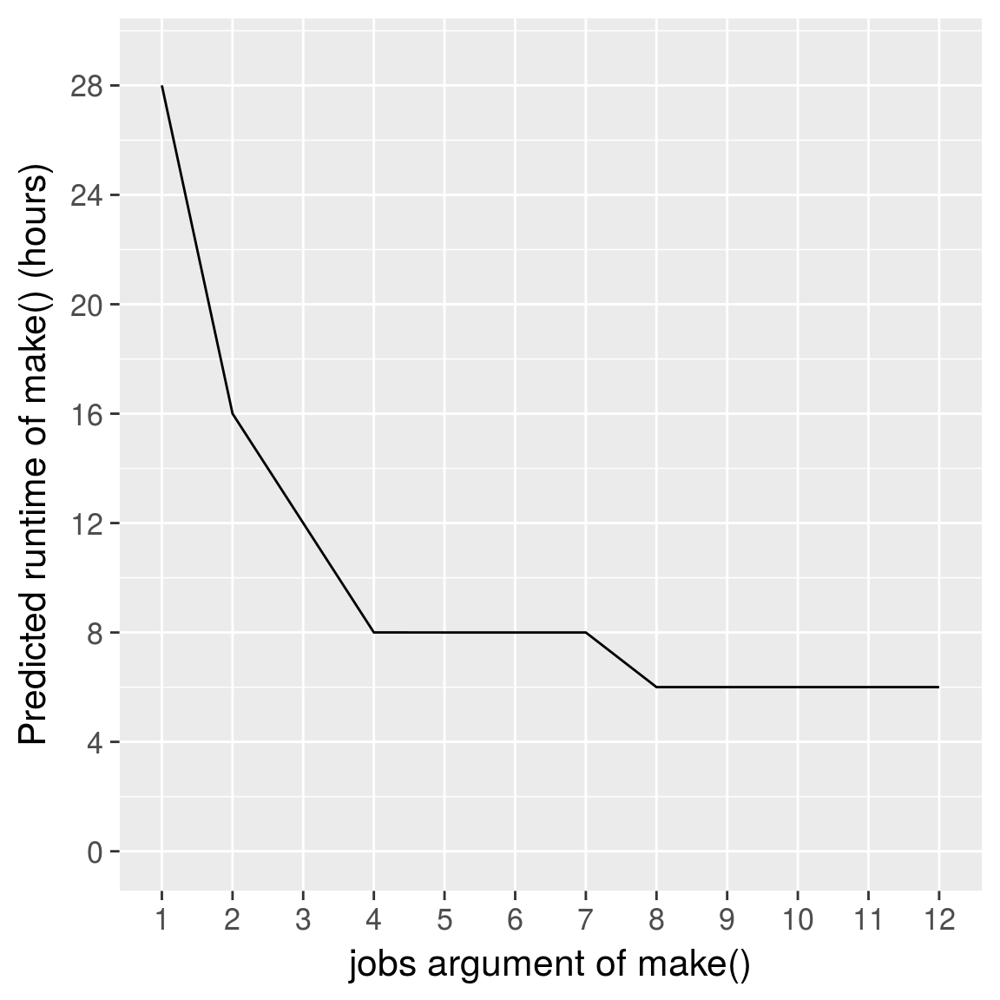

Chapter 10 Time: logging, prediction, and strategy
Thanks to Jasper Clarkberg, drake records how long it takes to build each target. For large projects that take hours or days to run, this feature becomes important for planning and execution.
library(drake)
load_mtcars_example() # Get the code with drake_example("mtcars").
make(my_plan, jobs = 2)
build_times(digits = 8) # From the cache.
## # A tibble: 28 x 5
## item type elapsed user system
## * <chr> <chr> <S4: Duration> <S4: Duration> <S4: Durat>
## 1 "\"report.md\"" target 0.127s 0.068s 0.011s
## 2 "\"report.Rmd\"" import 0.023s 0.002s 0.002s
## 3 coef_regression1_large target 0.032s 0.008s 0s
## 4 coef_regression1_small target 0.028s 0.008s 0s
## 5 coef_regression2_large target 0.026s 0.008s 0.001s
## 6 coef_regression2_small target 0.03s 0.008s 0.001s
## 7 data.frame import 0.062s 0.034s 0.002s
## 8 knit import 0.059s 0.033s 0.001s
## 9 large target 0.04s 0.009s 0s
## 10 lm import 0.044s 0.016s 0s
## # ... with 18 more rows
## `dplyr`-style `tidyselect` commands
build_times(starts_with("coef"), digits = 8)
## # A tibble: 4 x 5
## item type elapsed user system
## * <chr> <chr> <S4: Duration> <S4: Duration> <S4: Durati>
## 1 coef_regression1_large target 0.032s 0.008s 0s
## 2 coef_regression1_small target 0.028s 0.008s 0s
## 3 coef_regression2_large target 0.026s 0.008s 0.001s
## 4 coef_regression2_small target 0.03s 0.008s 0.001s
build_times(digits = 8, targets_only = TRUE)
## # A tibble: 15 x 5
## item type elapsed user system
## * <chr> <chr> <S4: Duration> <S4: Duration> <S4: Durat>
## 1 "\"report.md\"" target 0.127s 0.068s 0.011s
## 2 coef_regression1_large target 0.032s 0.008s 0s
## 3 coef_regression1_small target 0.028s 0.008s 0s
## 4 coef_regression2_large target 0.026s 0.008s 0.001s
## 5 coef_regression2_small target 0.03s 0.008s 0.001s
## 6 large target 0.04s 0.009s 0s
## 7 regression1_large target 0.035s 0.008s 0.001s
## 8 regression1_small target 0.027s 0.008s 0.001s
## 9 regression2_large target 0.052s 0.006s 0.003s
## 10 regression2_small target 0.031s 0.007s 0.001s
## 11 small target 0.031s 0.006s 0.003s
## 12 summ_regression1_large target 0.03s 0.008s 0s
## 13 summ_regression1_small target 0.031s 0.01s 0.001s
## 14 summ_regression2_large target 0.03s 0.008s 0s
## 15 summ_regression2_small target 0.033s 0.005s 0.002sFor drake version 4.1.0 and earlier, build_times() just measures the elapsed runtime of each command in my_plan$command. For later versions, the build times also account for all the internal operations in drake:::build(), such as storage and hashing.
10.1 Predict total runtime
Drake uses these times to predict the runtime of the next make(). At this moment, everything is up to date in the current example, so the next make() should be fast. Here, we only factor in the times of the formal targets in the workflow plan, excluding any imports.
config <- drake_config(my_plan, verbose = FALSE)
predict_runtime(config, targets_only = TRUE)
## [1] "0.583s"Suppose we change a dependency to make some targets out of date. Now, even though, the next make() should take a little longer.
reg2 <- function(d){
d$x3 <- d$x ^ 3
lm(y ~ x3, data = d)
}
predict_runtime(config, targets_only = TRUE)
## [1] "0.583s"But what if you plan on starting from scratch next time, either after clean() or with make(..., trigger = "always")?
10.2 Strategize your high-performance computing
Let’s say you are scaling up your workflow. You just put bigger data and heavier computation in your custom code, and the next time you run make(), your targets will take much longer to build. In fact, you estimate that every target except for your R Markdown report will take two hours to complete. Let’s write down these known times in seconds.
known_times <- c(5, rep(7200, nrow(my_plan) - 1))
names(known_times) <- c(file_store("report.md"), my_plan$target[-1])
known_times
## "report.md" small large
## 5 7200 7200
## regression1_small regression1_large regression2_small
## 7200 7200 7200
## regression2_large summ_regression1_small summ_regression1_large
## 7200 7200 7200
## summ_regression2_small summ_regression2_large coef_regression1_small
## 7200 7200 7200
## coef_regression1_large coef_regression2_small coef_regression2_large
## 7200 7200 7200How many parallel jobs should you use in the next make()? The predict_runtime() function can help you decide. predict_runtime(jobs = n) simulates persistent parallel workers and reports the estimated total runtime of make(jobs = n). (See also predict_load_balancing().)
time <- c()
for (jobs in 1:12){
time[jobs] <- predict_runtime(
config,
jobs = jobs,
from_scratch = TRUE,
known_times = known_times
)
}
library(ggplot2)
ggplot(data.frame(time = time / 3600, jobs = ordered(1:12), group = 1)) +
geom_line(aes(x = jobs, y = time, group = group)) +
scale_y_continuous(breaks = 0:10 * 4, limits = c(0, 29)) +
theme_gray(16) +
xlab("jobs argument of make()") +
ylab("Predicted runtime of make() (hours)")
We see serious potential speed gains up to 4 jobs, but beyond that point, we have to double the jobs to shave off another 2 hours. Your choice of jobs for make() ultimately depends on the runtime you can tolerate and the computing resources at your disposal.
A final note on predicting runtime: the output of predict_runtime() and predict_load_balancing() also depends the optional workers column of your drake_plan(). If you micromanage which workers are allowed to build which targets, you may minimize reads from disk, but you could also slow down your workflow if you are not careful. See the high-performance computing guide for more.